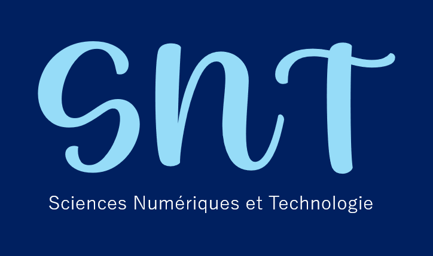

SNT: Sciences numériques et technologiques
Bienvenue sur mon site, je suis Lou Defaut. Je vais vous parler du programme de SNT.
programme officiel

Programmation Python
Pour t'entrainer, clique ici.
Si tu veux voir les différents cours, clique ici.
Données structurées
Pour en savoir plus, clique ici.
Réseaux sociaux
Pour en savoir plus, clique ici.
Informatique embarquée et objets connectés
Pour en savoir plus, clique ici.
Photographie numérique
Pour en savoir plus, clique ici.
Localisation
Pour en savoir plus, clique ici.
Cartographie
Pour en savoir plus, clique ici.
Internet et Web
Pour en savoir plus, clique ici
et clique ici .